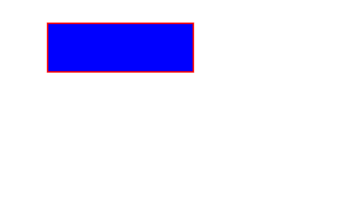
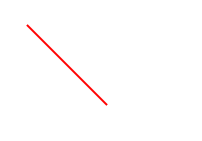
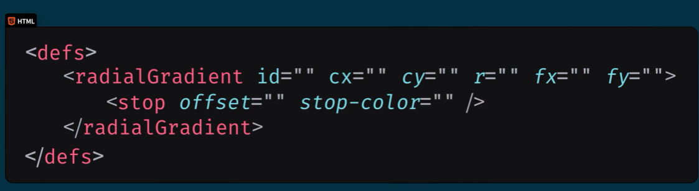

介绍
svg基本学习，了解常用绘图标签
# svg学习
SVG标签是SVG图形的一个容器
# 1.绘制矩形,圆形,椭圆形
- 矩形rect
- 圆形circle
- 椭圆ellipse
- 线条line
- 多线条polyline
- 多边形polygon
- 路径path
# 矩形rect

<rect width="" height="" fill="" stroke="" stroke-width=""/>
# 属性
width:定义矩形的宽度
height:定义矩形的高度
fill:定义矩形的填充颜色
stroke-width:定义了矩形的边框宽度
stroke:定义矩形边框的颜色
fill-opacity:定义填充不透明度
stroke-opacity:定义线框不透明度
x，y:定位
rx,ry:分别设置水平垂直方向的圆角
# 例子：

<svg width="400" height="400">
<rect
x="50"
y="50"
width="200"
height="150"
fill="red"
stroke="green"
stroke-width="5"
rx="20"
ry="20"
/>
</svg>
# 圆形circle

<svg>
<circle
cx="55"
cy="55"
r="50"
fill="purple"
stroke-width="3"
stroke="gray"
></circle>
</svg>
# 属性
cx:定义圆形中心的x坐标
cy:定义圆形中心的y坐标
r:定义圆形的半径
# 椭圆形ellipse

<svg width="400" height="400">
<ellipse
cx="100"
cy="100"
rx="50"
ry="30"
stroke="red"
fill="white"
></ellipse>
</svg>
# 属性
cx:定义椭圆中心的X坐标
cy:定义椭圆中心的y坐标
rx:定义水平半径
ry:定义垂直半径
# 例子

<svg width="500" height="150">
<ellipse cx="240" cy="100" rx="220" ry="30" fill="orange"></ellipse>
<ellipse cx="220" cy="100" rx="170" ry="20" fill="white"></ellipse>
</svg>
# 2.线条、多边型和多线条
# 线条line

<svg width="200" height="200">
<line
x1="20"
y1="20"
x2="100"
y2="100"
stroke="red"
stroke-width="2"
></line>
# 多边形polygon

<svg width="500" height="210">
<polygon
points="100,10 40,198 198,78 10,78 160,198"
fill="lime"
stroke="red"
stroke-width="2"
></polygon>
</svg>
points属性：点坐标集，空格分隔表示不同点，逗号分隔表示x,y
# 多线条polyline

<svg width="500" height="180">
<polyline
points="0,40 40,40 40,80 80,80 80,120 120,120 120,160"
fill="none"
stroke="red"
stroke-width="4"
></polyline>
</svg>
# 3.文本

<svg width="200" height="200">
<text transform="rotate(45 50,50)" x="10" y="50" font-size="20" fill="red">阿里嘎多，美羊羊桑</text>
</svg>
# tspan

<svg width="400" height="400">
<text x="10" y="20" fill="red">
Several lines
<tspan x="10" y="45">
First line
</tspan>
<tspan x="10" y="70">
Second line
</tspan>
</text>
</svg>
tspan相当于小text
# 给文本加超链接

<svg width="200" height="30" xmlns:xlink="https://www.w3.org/1999/xlink">
<a target="_blank" xlink:href="http://www.baidu.com">
<text x="10" y="15" fill="green">
百度一下
</text>
</a>
</svg>
# 4.路径

<svg width="400" height="500">
<path d="M150 0 L75 200 L225 200"></path>
</svg>
# 属性
d:命令+点
大写绝对定位，小写相对起点的相对定位
M(moveto),L(lineto),Q(贝塞尔曲线)
# 例子

<svg width="450" height="400">
<path d="M 100 350 l 150 -300" stroke="red"></path>
<path d="M 250 50 l 150 300" stroke="red"></path>
<path d="M 175 200 l 150 0" stroke="green"></path>
<!-- q命令绘制二次贝塞尔曲线 两个控制点 -->
<path d="M 100 350 q 150 -300 300 0" stroke="blue" fill="none"></path>
<!-- g:group可以给一组设置公共属性 -->
<g fill="black">
<circle cx="100" cy="350" r="3" />
<circle cx="250" cy="50" r="3" />
<circle cx="400" cy="350" r="3" />
</g>
<g font-size="30" fill="green">
<text x="100" y="350" dx="-30">A</text>
<text x="250" y="50" dx="-10">B</text>
<text x="400" y="350" dx="30">C</text>
</g>
</svg>
# 绘制虚线

<svg width="300" height="800">
<g fill="none" stroke-width="4" stroke="black">
<path stroke-dasharray="5,5" d="M20 20 l150 0"></path>
<path stroke-dasharray="10,10" d="M20 40 l150 0"></path>
<path stroke-dasharray="20,10,5,5,5,10" d="M20 60 l150 0"></path>
</g>
</svg>
# 5.模糊阴影

<svg width="400" height="400">
<!-- 设置阴影 -->
<defs>
<filter x="0" y="0" id="f1">
<feGaussianBlur stdDeviation="15"></feGaussianBlur>
</filter>
</defs>
<rect
x="100"
y="100"
width="90"
height="90"
stroke="green"
stroke-width="2"
fill="yellow"
filter="url(#f1)"
></rect>
</svg>
# 阴影


<svg width="400" height="400">
<defs>
<filter x="0" y="0" width="200" height="200" id="f2">
<feOffset in="SourceAlpha" dx="20" dy="20" fill="red"></feOffset>
<feGaussianBlur stdDeviation="10"></feGaussianBlur>
<feBlend in="SourceGraphic"></feBlend>
</filter>
</defs>
<rect
width="90"
height="90"
stroke="green"
fill="yellow"
stroke-width="3"
filter="url(#f2)"
></rect>
</svg>
# 6.渐变

<svg width="400" height="400">
<defs>
<linearGradient id="f1" x1="0%" y1="0%" x2="0%" y2="100%">
<stop offset="0%" stop-color="rgb(55,144,0)"></stop>
<stop offset="100%" stop-color="rgb(255,0,0)"></stop>
</linearGradient>
</defs>
<ellipse
fill="url(#f1)"
cx="200"
cy="200"
rx="100"
ry="50"
stroke="red"
></ellipse>
</svg>
# 径向渐变


<svg width="500" height="400">
<defs>
<!-- fx,fy定义里面的圆，cx,cy,r定义外面的圆形 -->
<radialGradient id="f2" cx="30%" cy="30%" r="50%" fx="30%" fy="30%">
<stop offset="0%" stop-color="white"></stop>
<stop offset="100%" stop-color="blue"></stop>
</radialGradient>
</defs>
<ellipse fill="url(#f2)" cx="200" cy="200" rx="100" ry="50" ></ellipse>
</svg>